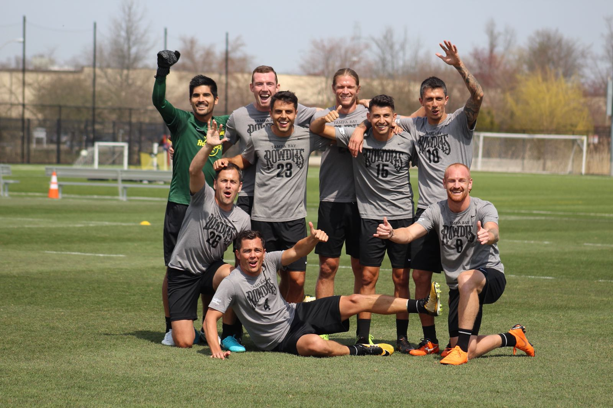

About Me
Hello my name is Zachary Portillos I am 27 years old and am currently living in Denver, Colorado. Just recently I have retired from playing professional soccer, mostly because my knees and legs didn't agree with that profession anymore. I have tranisitoned into the exciting world of finacial loan serving at a company called Autopay. Along with me on my jounery is my dog named Denver, he is German Shepard Lab mix or atleast thats what they said when I adopted him form the humane society. He is 2 years old and enjoys sleeping and sleeping. My hobbies include hiking, fishing, camping, really anything outdoors you get the point. Along with adventuring outdoors I enjoy visiting breweries and having some great food to go along with it such as tacos or chicken wings.
One of my most recent endevors has been enrolling in a coding bootcamp, this is going to be a challenging even for me but I look forward to it to help give me a new and actually exciting career path. Thanks for reading hope you enjoy the rest of my page.
Connect with Me